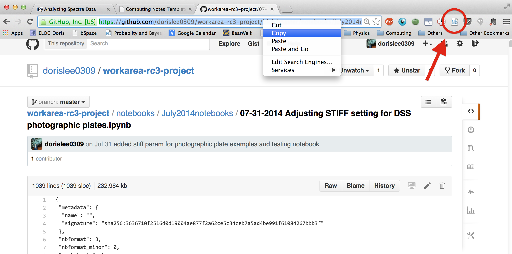

IPython notebook is not only a great way for programmer and scientist to visualize large data sets. They are also extremely convenient when communicating ideas via code along with its MathJax/LaTeX, Markdown, and various multimedia embedding features. Nbviewer is a webapp that allows people to share a presentatable version of their notebook rather than the default mardown cells of .nb files. It took me a while to figure out the interface of Nbviewer to be a bit too obvious and too good to be true. All you need to do is copy the url of the page and paste it in the textbox on NbViewer. Now anyone with the link of the resulting page can see the notebook GUI not just the code for markdown cells. The caveat here is that the GitHub repo must be public, so that the server can actually access it and non-collaborators with the link can see it.
If you are someone who uses this feature alot, there is a cool Chrome extension (circled red in picture below) that skips the step of going to nbviewer webapp and typing the link in.

I have noticed that sometimes the nbviewer webapp freezes when the notebook is too large while it is "Typesetting math ...%" (message at lower left hand corner). This error typically happens to notebooks that contains multiple LaTeX formatting because MathJax takes too long to load. While there isn't really a workaround on nbviewer, a brute force way to resolve this is to just copy the text in the .ipynb file and save it locally in a text file (or git clone the repo containing the notebook) then open the notebook locally in your browser using
ipython notebook --no-mathjax
which means it will no longer be filled with nicely marked-down equations but at least you get to read everything else.
Another cool thing about IPython is the nbconvert, which converts the notebook to useful formats (pdf, markdown for slides, paper and presentation). This tutorial provides a handy overview of these awesome nbconvert functions. Note that to use this feature you must first install PanDoc.